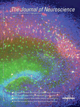
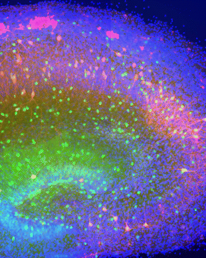

News Archives : 2012 : Volume Control at the Synapse [Murthy Lab]
by Geoff Lau and Venkatesh Murthy
June 22, 2012
You can't miss it in the news these days: neuroscientists are excited about anatomical reconstruction of neural connectivity. In fact, the term "connectomics" is a frequently-edited entry in Wikipedia. The overall goal of these endeavors is to identify all the synapses made by all the neurons to make a diagram of who is connected to whom. Although the existence of particular connections is an important determinant of the circuit, knowledge of the actual strength of connections is just as vital to account for the real time physiology of the relevant neural network. In this study, we used genetic and electrophysiological methods to investigate one determinant of the strength of a synaptic connection -- the amount of neurotransmitter packaged into a single synaptic vesicle.
As any textbook (or Wikipedia) will tell us, a typical neural circuit consists of excitatory and inhibitory neurons. In vertebrates, the major excitatory and inhibitory transmitters -- glutamate and GABA respectively -- are structurally related. In fact, only one biochemical step is required to convert glutamate into GABA, a step catalyzed by the enzyme glutamic acid decarboxylase (GAD). Of the two isoforms of this enzyme present in mammals, GAD67 is essential and its deletion is lethal in mice. Our study asked two questions about this important enzyme: (1) Is GAD67 rate-limiting for conversion of glutamate to GABA and its subsequent transport into synaptic vesicles? (2) Is GAD67 expression regulated by neural activity as a means to control filling of vesicles with GABA?
Since mice that lack GAD67 die at birth, we studied synaptic transmission in cultured neurons from these mice. We used patch-clamp electrophysiology to record elementary synaptic events (called quanta) caused by spontaneous release of transmitter from single synaptic vesicles. Quantal events were significantly smaller in neurons lacking GAD67. We then used a pharmacological trick with a weak competitive antagonist of postsynaptic GABA receptors to show that the reduced amplitude was due to less GABA released (rather than reduced postsynaptic reception). Cytosolic GABA concentration, therefore, is a rate-limiting step in the steady-state filling of vesicles. Our results also indicate that the other isoform, GAD65, is unable to substitute fully for the loss of GAD67.
If GAD67 can determine cytosolic GABA concentration, and therefore affect how much of it is packaged into vesicles, is this enzyme's level a target for regulation? We subjected culture networks to persistent reduction of activity by blocking action potentials for two days. Inactivity reduced the levels of GAD67 and GABA, as well as the strength of inhibition (quantal amplitude) in wildtype cultures -- a compensatory response. This homeostatic behavior was strongly attenuated in networks of neurons lacking GAD67. Our work indicates that neural activity positively regulates the expression of GAD67, which in turn synthesizes more cytosolic GABA, resulting in more GABA getting packed into vesicles. This increases the strength of inhibitory transmission, which then dampens network activity. Such feedback loops implementing automatic gain control appear to be rather common in biology.
Since a single inhibitory neuron can make synapses on hundreds of other neurons, changing its output strength through cell-wide changes in GABA concentration will have major effects on the excitability of a network. Interestingly, alterations in expression of molecules like GAD67 have been found in neuropsychiatric disorders such as schizophrenia. Our study provides a framework for testing aberrant homeostatic regulation of GAD67 and inhibitory transmission in models of neuropsychiatric disorders.
Read the Journal of Neuroscience paper
Cover image courtesy of Geoff Lau. A coronal slice of mouse hippocampus that was cultured in vitro for 14 d. GFP (green) marks all interneurons expressing glutamic acid decarboxylase 67 (GAD67). Staining against parvalbumin is red and nuclei are labeled with DAPI (blue). Activity deprivation for 2 d with tetrodotoxin reduces the expression of GAD67 and GFP reporter.
